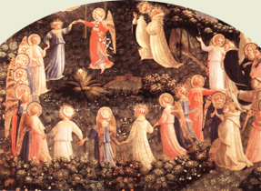

|  |
|---|
[91319] Ars musyce, n. 1 Incipit ars musyce. Quatuor ecce tropi natura iure creati. Quatuor ut reges infra sua regna sedentes hinc prothus ac deuterus tritus tropycusque tetrardus. Sub dicione sua cohibent modulamina cuncta. Quos tam prudenter distinxit musica mater. Tam statuit certas vocum discrimina metas ut alterius non usurpet sibi cantus, vindice natura at altera iura. A gravitate quadam nimium distabat acumen. Et gravitas neumis conveniebat acutis. Sic ex consilio divisis quatuor octo. Ergo suum comitem dux sede recepit eamdem comodus et patiens et amice federa ingens. Omnibus hospicium finale dedit tetracordum primaque d primos habet et que secunda secundos. Obtinet equivoces f tertia, quartaque quartos hos tonos et semis. Sequitur semis tonos istos. Dytonus et semis superantes praepedit illos. Sic cum semitonis series discreta tonorum discernit nobis finem quorumque troporum. Quere nunc ratio rationis et exigit ordo. Quot teneant proprium que sunt convenientia quae non. Quomodo quemque tropum sua constituat dyapason. Aut ubi concordent ubi discordando repugnent. Alter ab alterius defendens iure suum jus. Et nunc quisque modus duplici modulamine fretus. Autentum plagam sedem componit in unam. Ut dux autentus comes ut sit plaga vocatur. Alter enim minor est pendit dignior alteri. Quot cum natura dictavit physica vocibus ut voces liquidis apte graviores. Et gravibus liquide resonent infra que supra que. Quae quasi confuse concordabant minus antea. Condicione tamen qua se sciat inferiorem. Neu quis sortitur metas comes egrediatur ut quos non liceat voces atingere queret sin alias captum dux fortior auferat illum. Et totus cantus sub nomine transeat huius. Primus ab a plagalis in a firmat sua castra. Alterius b distinguit utrumque. Excedit de e tentoria tertia. Nam dd quartum octo sub limite claudunt. Hos cogit et e medii sibi ius legis et f g. Que dyapente supra reddunt Dyatesseron infra. Aucuntus primus intra d d spaciatur. At sua tendit in e tentoria deuterus ex e ex f in f magis distingue palacia triti. Ex g g summi disponitur aula tretracordi. Hiis a b c d medietates linque e e hiis dyapente subest grossus Dyatesseron effert. Set quoniam veluti promit suam flecti. Segnius animos dimissa per aures quamque sunt oculis subiecta fidelibus ecce. Ordine dispositionis compingo castra figuris. Ex tam mirifice natura struxit et artes distribuit tropis se musyce matre creatis hiis ades expugna quisquis potes hec mea contra.
[91320] Ars musyce, n. 2 Tractaturi de musyca. Videndum est quid sit musyca. Est autem musyca vocum mocio congrua et ratione canendi frenata. Unde dicitur musyca a moysa Grece quod Latine dicitur aqua quia olim primo fuit inventa in ydeaulis id est in aquaticis instrumentis et in malleis fabrilibus a Pytagora. Unde et olim in aquaticis exercebatur instrumentis. Vel musyca dicitur a Musa ut quidam volunt quod est instrumentum quoddam musycum dicuntur satis et iocunde clangens omnia musyca instrumenta excellens eo quod omni uni vim et modum in se contineat, humano si quidem inflatur spiritu ut tibia manu temperatur. Ut figella folle concitatur ut organum unde a Greco (...) c a id est media dicitur eo quod sint aliquo medio diversa coeunt spacia. Ut in Musa plurima conveniunt instrumenta unde non incongrue a principali parte sui musyca nomen sortita est. Dicunt etiam quidam musycam a Musis nomen accepisse eaeque ipse apud antiquos in hac arte perfecte crederentur et ab eis pericia modulandi quereretur. Unde et a potu Musa id est a querendo Muse dicte extimantur. Alii musicam quasi mundicam id est a mundi, id est celi cantu dictam putant. Cycero quid est in quid quod complet aures meas. Cantus et tam dulcis sonus. Hic est in quidquid impulsu et motu ipsorum orbium efficitur et acuta cum gravibus temperans varios equabiliter concentus efficit. Haec de musyce nominatione sufficiant (breviter dicta). Veteres musyci gama non ponebant in monocorda gravitate secundi toni est appositum cuius cantus sine eo fieri non potest ut in officio. In omni terra et in aliis ubi autem nos dicimus a, ibi Greci dicunt proslambanomenos et ubi nos dicimus b id est Greci ypatheypaton. Notandum quod consonancie iste sex tunc dicuntur consonancie quando superior vox ab uno et inferior ab alio tanguntur set quando unus dyapente Dyatesseron vel dyapason et sic de aliis cantaverit intervallia vocantur. Est autem inter consonancias simplices dyatonus dulcis da dyapente dulcior dulcissima dyapason. Inter compositas prima dulcis secunda dulcior, tertia dulcissima hoc probat in organo. Cythara et distantie notandum quod sicut in musyca. Brunonis dicitur quisquis sibi videtur sine artis huius noticia bene canere cum interrogatur de numeris intervallis acutorum graviumque sonorum nescit rendere vultque aurium sensui credere non autem rationi in genere cum utrumque iudicium sit requirendum. Amplius autem rationis que ipsam veritatem integritatemque ad liquidum in rerum natura in quantum possibile est ex munere omnipotentis artificis comprehendit. Is inquam talis magis lascivie que ultimo anni tempore ac sic suaviter et dignitose canat est comparandum quam peritus cantor habendus. Tanto namque in musyca se quisque reddit studiosiorem quanto noverit ipsam artem utiliorem. Musica una est ex septem artibus quas liberales appellant naturales quidem quemadmodum alie unde ioculatores et histriones qui prorsus illiterati sunt. Dulcisonas videmus aliquando contexere cantilenas hinc est illud Boetii in primo capitulo sue musyce. Nihil inquit tam naturale tam proprium omni humanitati quam dulcibus modis remittenti contrariis astringi hinc etiam intus nosci potest quod non frustra. A Platone dictum est mundi animam musyca continencia fuisse coniuncta. Et cum enim in eo quod in nobis iniunctum est convenienterque coaptatum illud excipimus quod in sonis apte convenienterque coniunctum est eoque delectamur nos ipsos eadem similitudine compactos esse cognoscimus, est enim similitudo dissimilitudini odiosa. Set quorsum ista haec quia non potest dubitari quando anime nostre et corporis status musycis proporcionibus quodammodo videatur esse compositus. Inde est enim quod infantes dulcis cantilena oblectat aliud vero aspergunt immite ob audiendum voluptate suspendit. Nimirum etiam id omnis etas patitur omnisque sexus quibus suis actibus distributa sint una tamen musyce delectatione coniuncta sunt hec Boetius. Set sicut gramatica dialectica cetere artes si non essent scriptae ac per precepta elucidate incerte habentur et confuse ita, et hec. Sciendum autem quod ars hec non infima est inter artes reputanda presertim cum clericis maxime sit necessaria et quibuslibet eam exercitantibus fit utilis et iocunda. Quisquis namque ei incessanter operam adhibuerit et sine intermissione indefessus institerit talem inde fructum consequi poterit ut de cantus qualitate an sit urbanus an volgaris verus an falsus iudicare sciat et falsum corrigere et novum componere. Non igitur est parva laus non modica utilitas non vilipendendus labor musyce scientia qui sui cognitione compositi cantus efficit iudicem falsi emendatorem novi emendatorem. Notandum autem quod musycus et usualis cantor non parum a se invicem discrepant nam cum musycus per artem semper ratione incedat. Set cantor usualis aliquociens rectam pro usu solummodo viam tenet. Cui ergo melius properaverim cantorem usualem quam ebrio qui domum suam quidem repetit set quo calle revertatur penitus ignoravit. Set et molaris rota aliquando discretum stridorem reddit ipse tamen nesciens quid agat utpote res inanimata unde Guido in Mycrologo ait musycorum et usualium magna est distancia. Nam qui facit quod non sapit diffinitur bestia (etcetera). Hoc ergo illi primum qui se ad musyce disciplinam aptare desiderat iniungimus ut licteras cum sillabis ascriptis figure subiecte affirmare studeat nec antequam eas memoriter teneat ab licita opera desistat. Sex sunt sillabe quas ad opus musyce sumimus diverse quidem apud diversos verum Angli Fratigene Alemanni utuntur hiis. Ut Re Mi Fa Sol La ex ymno illo ut dicitur sumptas cuius principium est ut queant laxis ecce habemus ibi ut resonare fibris ecce re mira gestorum ibi mi famuli tuorum illic fa solve polluti ecce sol labii reatum ecce la. Per has itaque is qui musycam scientie affectat conciones aliquas cantare discat quousque ascensiones et descensiones multas que earum proprietates plene ac lucide pernoscat. In manus etiam et articulis modulari sedulus assuescat et in ea cantum probet, corrigat et componat hoc si aliquandiu fecerit et alte memorie commendaverit facilius procul dubio ad musycam iter habebit. Musycorum ergo tria sunt genera unum quod carmina fingit. Secundum quod instrumentis agitur tertium quod instrumentorum opus carmenque divi (...) dicat hiis ergo est musyca quando canendi scientiam non silicum operis set imperio speculationis assumit ut supra nulla disciplina ut idem dicit sine musica potest esse perfecta quia nil sine illa manet. Ipse mundus quadam armonya sonorum est compositus et celum ipsum sub armonie modulacione revolvitur. Et aput Pytagoricos, Stoicos, Platonicos physicam turpius erat musycam nescire quam licteras. Set nec hoc recitari oportet quam magnam vim commovendi animos auditorum cantus musyce habet. Si quidem aures mulcet, mentes erigit, proeliatores ad bellum incitat lapsos et desperantes revocat, latrones exarmat, iracundos mitigat, tristes et anxios letificat, discordes pacificat, vanas cogitationes eliminat, freneticorum rabiem temperat sicut in libro regum de Saul legitur de cytara David. Item freneticus quidam Asclepiade medico canente cytara liberatus est, ut dicit Boetius. Set et idem A. de Pytagora refert quod luxuriosum quemdam iuvenem ab immoderata libidine musyca modulatione revocaverit. Per unum enim cantandi genus poteris aliquem ad luxuriam provocare eum denique quantocius per aliud penitentia ductili revocare. Cuius rei experimentum Guido de quodam iuvene refert.
[91321] Ars musyce, n. 3 De triplici musyca. De triplici autem musyca idest mundana, humana et instrumentali et de triplici genere musyce melodie scilicet dytriamica enormonico cromatico. Require in musyca Boetii (...), Phylolay et Macrobii et in philosophorum tractatibus modernorum. De unisono. Unisonus, unisonus dicitur quasi unum habens sonum qui fit quando una vox continue repercutitur. De tono. Tonus a tonando dictum est autem tonare, potenter sonare quia tonus formam habet sonum respectu semitoni. Semitonus a Platone vocatur id est non plenus tonus set imperfectus unde Virgilius semiveri fruges. De semitonio. Semidytonus dicitur eo quod non sit plenus dytonus huius due sunt species una tono et semitono, altera semitonii - ponit notabilia -. Set sciendum quod novem sunt modi quibus omnis melodia contexitur scilicet unisonus semitonium, tonus, semidytonus, dytonus, dyapente. Semitonium cum dyapente, tonus cum dyapente hiis moderni duos apponunt scilicet tritonum et dyapason. Ex hiis dicuntur sex consonantes et tres simplices et tres composite. Simplices sunt dytonus, dyapente, dyapason. Composite Dyatesseron cum dyapason. Dyapente cum dyapason. Bis dyapason ad hec valet ante. Ter terni sunt modi quibus omnis et cetera. Dyapente Latine de quinque sonat eo quod ab una incipiente voce ad quintam saltum facit habens in se Dyatesseron et tonum. Est autem quemadmodum primus inter e et g secundum inter d et a tertium inter e et b quartus inter f et e. Duo autem qui restant modi scilicet semitonium cum dyapente et tonus cum dyapente intervallia vocantur. Iulianus apostata et imperator semitonium cum dyapente adiecit. Et nota quod quando dicis semitonium cum dyapente unum modum signas quando vero semitonum dyapente duos. Idem de tono et dyapente constituunt dyapason. Primus plagalium id est secundus tonus constat ex prima specie Dyatesseron inferius que est ab a in d et ex prima - seguitur de plagalibus - specie dyapente que est ab eadem d m a et ex prima specie dyapason que est ab a in a. Secundus plagalium idest quartus tonus.- De tertia plagalium -. Constat ex secunda specie Dyatesseron inferius que est a et b in e et ex secunda specie dyapente que est ab eadem e in b et ex secunda specie dyapason que est a b in b. Tertius plagalium idest sex tonus constat ex tertia specie Dyatesseron inferius que est a c in f, et ex tertia specie dyapente que est ab eadem f in c et ex tertia specie dyapason que est a c in c - quartus plagalium. Quartus plagalium idest octavus tonus constat ex quarta specie Dyatesseron inferius que est a d in g et ex quarta specie dyapente que est ab eadem g in d; et ex quarta specie dyapason que est a d in d.- Seguitur de autentis. Primus autentorum idest primus tonus constat ex prima specie dyapente que est a d in a et prima specie Dyatesseron superius que est ab eadem a in d et ex prima specie dyapason que est a d in d.- Secundus autentus. Secundus autentorum idest tertius tonus constat ex secunda specie dyapente que est ab e in b; et secunda specie Dyatesseron superius que est ab eadem b in e et ex secunda specie diapason que est ab e in e. Tertius autentorum id est quintus tonus - tertius autentus - constat ex tertia specie dyapente que est ab f in c, et ex tertia specie Dyatesseron superius que est ab eadem c in f et ex quarta specie dyapason que est a g in g.- De quarto autento. Quartus autentorum id est septimus tonus constat ex quarta specie dyapente que est a g in d et ex quarta specie Dyatesseron superius que est a d in g et ex quarta specie dyapason que est a g in g. (Figura). I: voce plagalis unum est quod est quod est quod est primus plagalis; II: d d est sustancia vocat a b c d f g est sustancia. (Figura). I: voces proprie plagales tertii e d e diapason autenti thalatus; f g a b c; II: voces propri autenti tertii d e f tertii et sui plagalis chorus matronalis; omnes; chorus virilis. (Figura). I: voces proprie plagales a b c thalamus; II: voces proprie autenti b c d b c d et sui subiugati. Chorus matronalis; omnes utriumque; chorus virilis. (Figura). I: voces proprie plagalis tetrardi d e f; II: voces proprie autenti tetrardi a b c d e f; g: chorus matronalis; chorus virilis. (Figura). I: voces proprie plagalis deutri b c d autenti; c f g a; II: voces proprie autenti deutri et sui et subiugalis; deutri thalamus; chorus matronalis. (Figura). Primus cum quarto sextus simul incipit ex a octavus quintus ac tertius incipit in c et que secundus amat d septimus altior istis.
[91322] Ars musyce, n. 4 Quoniam inter septem liberales artes musyca primatum tenet testante Boetio utpote illa que de complexione corporum celestium et coniunctione elementorum et armonica unione corporis et anime continet. Ideo quidem utile considerare duximus quid sit musyca et ad quid et qualiter docenda sit. Musyca est ars contemplandi diversitates consonanciarum. Discernens illam quadrimembrem divisionem vocum simplicium ad simplices, compositarum ad compositas simplicium ad compositas compositarum ad simplices. Quidam autem dicentes hanc quadrimembrem divisionem esse superfluam hanc tripartitam sufficere dicebant. Voces alie graves alie acute alie superflue. Nulla enim est maneria vocum que sub aliqua istarum specierum non contineatur. Hanc autem sufficientem confirmabant ex supposita divisione artis musyce. Musyca alia instrumentalis, alia mundana, alia humana. Instrumentalis musyca est discernendis et cognoscendis cantibus actributa. Constat cum in artificialibus cum in naturalibus instrumentis. Naturalia instrumenta sunt lingua dentes, palatum etc., quibus vox formatur. Artificialia sunt quibus sonus per doctrinam et industriam elicitur ut lira et tympanum etc. que humano exercicio sunt inventa. Humana est que in proportionali institucione rerum humane fabrice et concordi iunctura elementorum mundi et posicione numerorum quattuor in humano corpore. Set armonica unione anime et corporis consistit. Mundana est que constat in complexionali effectu elementorum mundi et super celestium corporum motu dissilabi. Item instrumentalis alia melyca alia metrica aut richmica. Melyca est que cantibus discernendis et cognoscendis proportionaliter est attributa. Metrica est scientia sillabis cognoscendis accomodata, que longa que brevis sit discretiva. Richmica est scientia unius sillabarum in richmo ponendarum super faciem non directam vel obliquam syderum cursum set musyca consonanciam invenit animam esse licet nullum predictorum nisi per eam consistere habeat. In eclepyo quoque dum est musice vero nosse nihil aliud est nisi cunctarum rerum ordinem scire et que sit divina ratio sortita. Ordo enim rerum omnium singularium in unum omni artefici racione collata et centum quemdam melodivino dulcissimum verumque sonum efficiet. Dicto unde dicatur de triplici divisione data musyca et quid sit et a quibus inventa et a quibus nominata. Nunc dicendum quod superius ita triplex artis divisio subdividendi in bipartitam artis vel locorum divisionem. Locorum alia sunt linealia alia spacialia. Linealia quidem sunt quatuor gravia, haec sunt scilicet c b d f quatuor et acuta a c e g duo.
[91323] Ars musyce, n. 5 Musyca est ars vel scientia liberalis subministrans copiam perite canendi vel musyca est motus vocis. Vel musyca est scientia vocum sibi invicem concordancium vel musyca est sciencia vocum tam simplicium quam compositarum. Est autem a Grecis inventa quod ostendunt Grecum elementum in principio alfabeti positum. Scilicet est Grecum g qui quidam locus est tamquam origo et fundatum locorum subsequencium per Latinas literas disegnatorum qui quidem loci sunt per Latinas consumati. Haec ars a Grecis inventa a Latinis vero consumata. Quadam die cum summus philosophus Pytagoras scilicet deambulans spaciaretur transivit iuxta fabricam et audivit quinque malleos incudem ferentes. Sed unus discordabat ab aliis, audiens Pytagoras intravit fabricam et discordantes mutavit malleos, putans illam dissonanciam provenire ex ineguali quantitate malleorum vel ex impari ferencium robore vel ex diversa metalli decoctione et malleum unius deposuit in manus alterius et a contrario et tunc similiter discordabant hec audiens Pytagoras quintum malleum ab officio cessare fecit reliqui vero quatuor mallei mirabilem consonanciam reddebant unde quaternarius numerus actribuitur Pytagore unus Theodus. Sit tetras in ordine vestro Pytagore numerus. Ex predicta ergo quatuor malleorum consonancia elicuit Pytagoras musycam quo moriente quamplurimum data est oblivioni musyca. Videns ergo Guido tante oblivioni artem traditam magnopere studuit illam restaurare. Cumque alii musyci ut Tubal qui fuit pater cantantium in organo et cythara et Licofrons qui volens musycam commendare, commendavit cytaram. Ad hanc ipsam operam dederunt non tamen eis set Boetio et Guidoni artis huius debetur auctoritas quam qui nosse voluit perfecte omnium artium habere noticiam necesse erit. Dicit enim primus laudans Iulianum et Homerum et Virgilio eum comparans quorum uterque artem possederat musyce musycam ponens pro septem liberalibus artibus. Et philosophus industri indagine perquirens quid esset anima tamdem invenit non constructioni gramatices, non proposicioni loyces non suasioni vel deortacioni rethorices non numeri atessonancium non superficiem non directum vel obliquum non syderum cursum. Set musycam consonanciam invenit animam esse licet nullum predictorum nisi per eam consistere habeat. In esclepeyo quo dictum est musyce vero nosse nihil aliud esse nisi cunctarum rerum ordinem scire queque sit divina ratio sortita. Ordo enim omnium rerum singularium in unum omni artifici racione collata contentum quemdam melo divino dulcissimum varium sonum conficiet.
[91324] Ars musyce, n. 6 Dicto unde dicatur musyca et quid sit et a quibus et qualiter inventa et a quibus manifestata nunc dicendum quia superius est data triplex divisio artis subdividendi in bipartitam artis vel locorum divisionem. Locorum alia sunt linealia alia spacialia. Talia quidem sunt quatuor gravia hec scilicet b d f: quatuor etiam acuta a c e g. Duo denique super acuta b et d. Que quidem idcirco dicuntur linearia, quia ad designandum huiusmodi loca pertrahuntur quedam linee huiusmodi locorum designativa. Specialia autem sunt quatuor gravia a c e g et acuta b d f; et duo superacuta a c dicuntur autem spacialia quia designantur per spacia lineis interpositis et de locis que sumantur de hiis perstringimus sufficiant. Sed quia circa perfectam cognicionem vocum totius huius negocii versatur intentio gratia quarum vocum de locis diximus ad voces stilum vertamus has itaque triphariam dividentes que et quot sint vocis proprietates palam facientes que et quot sint proprietatum mutaciones exhibentes tam simplices voces quam compositas faciemus. Vocum ergo secundum quosdam locorum vero secundum alios alia sunt graves vel alia sunt acute alia sunt superacuta vel superexcellentes. Corales quidem sunt hec voces scilicet voces sunt a b usque ad dyapason. Acute voces sunt a g usque ad (...) que iterum dyapason. Superacute vel superexcellentes voces sunt que sunt a g usque ad finem alphabeti musyca quod est dyapente. Itaque usque hec sit indivisum. Sicque alphabetum in directa ascensione vel in directa descensione habet duo dyapason et duo dyapente. Similiter divide loca in gravia et acuta et superacuta vel superexcellentia. Gravia sunt ista octo, et gra d g b g; c g d g; e g f g g g. Dicuntur autem haec gravia, gratia vocum in illis positarum. Cum enim cantus loca illa peragret solet vox tantum gravari et non acute sublimari.
[91325] Ars musyce, n. 7 Acuta sunt ista. Septem a acutum, b acutum, c acutum, d acutum, e acutum, g acutum. Dicuntur autem hae loca acuta gratia vocum huiusmodi locis interpositarum. Solemus enim in huiusmodi acute canere. Superacuta sive superexcellentia sunt ista quattuor a superacuta, b superacuta, c superacuta, d superacuta sive excellentes. Dicuntur autem superacute sive superexcellentes quia supereminent universis aliis tam loci posicionem quam vocis ascensionem. Species autem sive voces sunt VI quarum prima est ut, secunda re tertia, mi, quarta fa, quinta sol, sexta la. Vocum autem alia est simplex ut dictarum quelibet alia composita ut que ex hiis coniuncta, quales sunt unisonus, tonus, semitonus et cetera. De quibus omnibus suis locis evidentiori tractatu explicabitur. Nunc itaque ad perutiles vocum proprietates properemus.
[91326] Ars musyce, n. 8 De proprietatibus vocum. Est itaque proprietas vocum simplicium distinctio. Hec vero proprietates sunt videlicet prima b quadratum, secunda prima nota, tertia b rotundum. Dicitur autem b quadratum propter quadraturam figure huiusmodi proprietatem retinens, quia quidquid quadratum est firmum est et solidum. Sicque sonus in b quadrato formatus solidus est b rotundum similiter est a rotunditate figure dictum huiusmodi proprietatem demonstrans. Quecumque enim vox formatur in b rotundo, defectum et debilitatem quadam innuit. Quia quicquid rotundum est volubile est et instabile est. Sicque quomodo debile iudicatur. Propria nota tertia proprietas dicitur quia proprietas notas sibi vindicavit ab utraque proprietatum predictarum separatas. De hiis proprietatibus agamus ostendentes scilicet que specis proprietatum quam species vocis quolibet loco sibi possidebat. De prima itaque proprietate tamquam et digniori exordiamur. Prima proprietas scilicet b quadratum habet primam vocem in g solo et omni scilicet ut in g gravi et g superacuto in secundam vocem scilicet re in a solo et omni scilicet in a gravi et acuto et superacuto, tertiam scilicet mi, in b solo et omni etc., quartam scilicet fa in c solo et omni, quinta scilicet sol in d solo et omni, sextam vocem scilicet la in e gravi et in c acuta.
[91327] Ars musyce, n. 9 De secunda proprietate. Secunda proprietas scilicet propria nota vocum habet primam vocem in t solo et utroque ut in c gravi et acuto. Nam Vo (...) in d solo et utroque ut in d gravi et acuto tertiam vocem in e solo et utroque scilicet in f gravi et acuto. Quintam est g solo et omni, sextam in a solo et utroque. Tertia proprietas scilicet b rotundum habet primam vocem in f solo et utroque secundam in g solo et utroque tertiam in a solo et utroque quartam in b solo et utroque, quintam in c solo et utroque sextam in d (solo) et utroque scilicet in d acuto et superacuto. Hactenus de proprietatibus succinta brevitate diximus ut diligens lector inveniat quod supersedendo eliciat. Solent autem aperta viliscere, tecta autem solent exercere. Exercitatio tamquam magna expensa plurimum solent placere. Nunc conseguenter de proprietatum mutacionum agendum est. Que et quot sint genera mutacionum ostendendo quod tamen sit mutatio scilicet ab illa proprietate in aliam progressio. Sunt autem genera mutacionum sex, fit itaque progressio a b quadrato in propriam notam ut fa re in c gravi et acuto vel a propria nota in b quadrato velut ut, fa ut in eisdem locis vel fit progressio a b quadrato in b rotundum utpote in a acuto et a superacuto vel e contrario in eisdem locis scilicet a b rotundum in b quadrato, velut mi re et sic omnis mutacio vel est b quadrati per propriam notam vel e contrario proprie note per b rotundum vel e contrario vel b quadrati per b rotundum vel e contrario et hec de mutacionibus sufficiant. Hec autem species in novem dividuntur prima quarum est ut (...) unisonus. Secunda tonus tertia semitonus, quarta dytonus, quinta semidytonus, sexta Dyatesseron, septima tritonus, octava dyapente, decima semitonium cum dyapente, undecima dyapason. Dicuntur autem quedam istarum consonancie quia consonant idest simul sonant non quod proportionabiliter consonanciam efficiant. Sunt tres tantum principales consonancie musyce, armonie, dyapason, dyapente Dyatesseron, que proporcionales dicuntur sicut superius enumeravimus sic exsequamur omnia et singula.
[91328] Ars musyce, n. 10 De unisono. Unisonus est consonancia constans ex duabus vocibus vel pluribus continuis in eadem lineari et spaciali concentis cuius species sunt sex scilicet ut ut re re mi mi fa fa sol sol la la. Similiter dicuntur retrograda, la la sol sol et cetera.
[91329] Ars musyce, n. 11 De tono. Tonus est consonancia constans ex duabus continuis sive intervallo alterius vocis non in eodem lineari vel eodem spaciali positis set quarum altera in lineali, altera in spaciali cum non sint semitonii contineantur. Cuius toni species sunt octo, quattuor ascendentes et quattuor descendentes. Ascendentes quemadmodum ut re re mi et fa sol sol fa et mi re re Lic. et hec quidem species toni per singulas assignari possunt proprietates.
[91330] Ars musyce, n. 12 De semitonio. Semitonium est constans ex duabus vocibus continuis quibus non fit tonus non in eodem lineari vel spaciali positis set in proximis sibi huius species sunt due scilicet mi fa et fa mi. Dicitur autem semitonus vel semitonium quia imperfectus tonus non enim semi tonium a semis dimidium set dicitur a semis semus ii quod est imperfectum. Ut vas dicitur semiplenum non quia dimidia pars desit set quia perfecte plenum non est, ut dicitur semivocalis et semidii. Est ergo semitonium ascendens mi fa: descendens fa mi.
[91331] Ars musyce, n. 13 De dytono. Dytonus est consonancia constans ex duobus tonis continuis cuius species sunt VII, quattuor scilicet ut mi fa la; la, fa mi ut. Hec quidem possunt gradatim ascendere et descendere verbi gratia: ut re re mi et fa sol sol la; descendere sicut: la sol sol fa mi re re ut. Dicitur autem dytonus a dya quod est duo et tono, quasi constans ex duobus tonis.
[91332] Ars musyce, n. 14 De semydytono. Semidytonus est consonancia constans ex tono et semitonio et e contrario enim huius species sunt quattuor: re fa et mi sol; ascendendo; descendendo autem mi sol et fa re gradatim autem ascendendo re mi mi fa; et mi fa fa sol, gradatim descendendo sol fa fa mi fa mi mi re. Dicitur autem semidytonus quasi imperfectus dytonus. Sicut semitonium dicitur imperfectus tonus.
[91333] Ars musyce, n. 15 De Dyatesseron. Dyatesseron est consonancia proportionalis constans ex dytono et semitonio. Dicitur autem Dyatesseron a dya Greca dictione que apud Latinos respondet hic nomini duo et hic prepositioni de. Dicitur itaque Dyatesseron a dya quod est de et tetras quod est quattuor inde Dyatesseron consonancia ex quattuor vocibus continuis compacta sive ascendentibus sive descendentibus dicitur continuis dico non unisonis sine intervallo ascensionis vel descensionis positis. Omnis enim Dyatesseron ex quattuor vocibus descendentibus vel ascendentibus constat huius species sunt videlicet prima quarum est ut, secunda re sol tertia mi, quarta. Descendendo quattuor la mi, quinque, sol re sex re fa ut; hec eidem species erunt et sic gradatim fiant.
[91334] Ars musyce, n. 16 De tritono. Tritonus est consonancia constans ex tribus tonis continuis. Dicitur autem tritonus ex tribus tonis continuis constans, huius species sunt due, scilicet fa mi et mi fa. Set ne videantur ex figura divisionis esse species semitonii. Sciendum est quod semper habent iste species tritoni fieri in diversis proprietatibus quod numquam contingit in speciebus semitonii vel est tritonus ab f gravi per propriam notam usque ad b quadratum vel e contrario a b rotundo, acuto usque ad e acutum per propriam notam vel e contrario vel est ab f acuto per propriam notam usque ad superacutum scilicet b vel e contrario.
[91335] Ars musyce, n. 17 De dyapente. Dyapente est consonancia constans ex dytono et semiditono. Dicitur autem dyapente a dya quod est de sicut prelibatum in ethimologya, Dyatesseron et penta quod est quinque. Inde dicitur dyapente consonancia ex quinque cordis continuis contexta. Omnis enim Dyatesseron ut dictum est ex quattuor, omnis dyapente ex quinque cordis constat, nunc ex pluribus nunc ex paucioribus. Set desideracione dignum et utile diximus quia non quelibet quinque voces continue nunc que efficiant diapente. Et si observentur predicte observancie verbi gratia vel a b gravi; usque ad f grave licet sunt quinque continue corde tamen non fit dyapente. Item ab e gravi usque ad b acutum si progressus fiat per b rotundum non fiat dyapente. Item a b acuto scilicet quadrato ad f acutum omnibus praedictis observatis non fiat dyapente. Item ab e acuto usque ad b superacutum scilicet non fiat dyapente. Causa quidem huius dissonancie est improntu quia duo semitonii vel duo semitonia sunt inter quelibet predictorum locorum set institucione cuiuslibet dyapente non debet esse nisi unum semitonium ergo inter predicta loca non est dyapente, huius autem dyapente VIII sunt species sicuti: ut sol; et re la; et la re; et sol ut. Item mi mi fa fa que item ne et unisoni species extimentur variis fuerint proprietatibus a litera enim videntur esse species unisoni.
[91336] Ars musyce, n. 18 De tono cum dyapente. Tonus cum dyapente est consonancia que constat ex tono et dyapente, ethymologya ex predictis palam est specierum quoque est tediosa est enumeratio set ut sub compendio dicatur, quibus dyapente cum tono sibi addito efficit tonum cum dyapente. Set notandum quod non cuilibet dyapente potest addi tonus non ergo quodlibet dyapente cum tono efficit hanc consonanciam set cui addi potest.
[91337] Ars musyce, n. 19 De semitonio. Semitonium cum dyapente est consonancia que constat ex semitonio et dyapente queque ex componentibus nomen accepit. Dicitur enim semitonium cum dyapente huius species sunt quattuor: mi fa et fa mi; mi sol, et sol mi.
[91338] Ars musyce, n. 20 De dyapason. Dyapason est consonancia constans ex dyapente et Dyatesseron. Et dicitur dyapason a dya quod est et pan quod est totum vel omne. Inde dicitur dyapason consonancia continens in sui constitucione omnes voces et omnia genera vocum omnes materias regulans species vocum continet enim dyapason omnia genera vocum set non singulas voces omnium generum, continet enim tonum cum dyapente, semitonium, ditonium, semidytonium, dyapente, Dyatesseron, tritonum, tonum cum dyapente et ceteras vocis species. Ne autem animos tyronum huius artis pocius everteremus ab arte quam in artem duceremus plurima que circa has proporcionales consonanciam dicere possemus scilicet que sexquarta que sexquitertia ponere vitavimus ne hiis et aliis quamplurimis que provectorum continebit tractatus supersedendo tediosi fieremus et illud Oracii corollarium amitteremus. Dicit enim Oratius omne tulit punctum qui miscuit utile dulci. Item epylogus superiorum in a b c d e f g; a b b c d e f g; hec nomina literarum artis musyce quicumque enim dixerint. Gamant, are, bemi, cefant, etc. aut brevitatis aut ignorancie causa similiter iunxerunt nomen lictere et nomen vocis dicentes gamant etc., quelibet due voces iuxta se posite sive in cantu plano sive in organo sive ascendentes sive descendentes sive intervallo sive linearis vel spacialis faciunt tonum excepto mi fa et fa mi. Iste enim voces mi fa et fa mi semper sibi iuncte faciunt semitonium quilibet tonus duas voces. Set quod est dytonus continet duos ergo quilibet dytonus duos tonos ergo quilibet dytonus continet quattuor voces, scilicet a c usque in b proximum non sunt, nisi videlicet voces ubi non est dytonus. Solummodo, media vox putatur pro duobus, est media vox finis primi toni et initium secundi toni verbi gratia ut re, tonus est re mi tonus. Sicque ut mi dytonus sic obiecto potest fieri de semitonio et similis dari solummodo dyapason constat ex quattuor cordis nec pluribus nec paucioribus et est semper a consimili in consimilem licteram verbi gratia a b in g, ab a in a, a c in c et cetera. Dyapason constat ex Dyatesseron et dyapente, set Dyatesseron constat ex quattuor vocibus. Dyapente constat ex quinque vocibus, quattuor et quinque sunt novem ergo dyapason constat ex novem vocibus ergo falsa est regula qua dicitur quod dyapason constat ex quattuor tantum et sic omnis regula de dyapason data est falsa media corda pro duabus reputatur verbi gratia a d gravi ad a acutum est dyapente ibidem id est in a acuto incipit Dyatesseron, usque ad d acutum et sic habebit octo voces et dyapason sic. Item musyce artis voces tantum sunt sex. Set dyapason constat ex aliquibus vocibus musyce artis ergo vel ex sex.